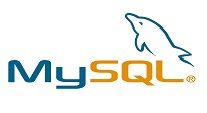
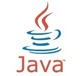
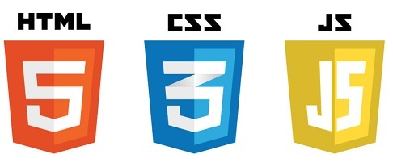
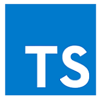
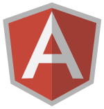

This Purchase Request System web application was created in the MAX Technical Training's summer 2019 full stack Java bootcamp.
Over the course of 3-months, each class member created a version of the PRS app using the following technologies:




